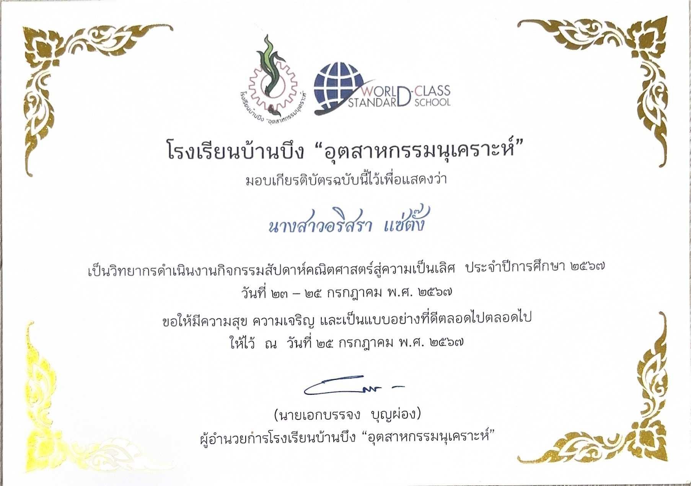

← กลับหน้าหลัก

กิจกรรมที่เข้าร่วม (ACTIVITIES)
🏆 เกียรติบัตรและกิจกรรมที่เข้าร่วม
🏅
โครงการแลกเปลี่ยนทางวิชาการครั้งที่ 10
ระหว่างโรงเรียนมัธยมศึกษาอิจิคาว่า ประเทศญี่ปุ่น และโรงเรียนวิทยาศาสตร์จุฬาภรณราชวิทยาลัย
ระหว่างโรงเรียนมัธยมศึกษาอิจิคาว่า ประเทศญี่ปุ่น และโรงเรียนวิทยาศาสตร์จุฬาภรณราชวิทยาลัย
- ตระหนักถึงความสำคัญของการสื่อสาร การรับฟัง และการทำงานร่วมกับผู้อื่น
- เป็นพื้นฐานสำคัญของวิชาชีพแพทย์
- การดูแลผู้ป่วยต้องอาศัยความเข้าใจความแตกต่างของแต่ละบุคคล
- ฝึกทำงานร่วมกับผู้อื่นได้อย่างมีประสิทธิภาพ
🏅
วิทยากรดำเนินงานกิจกรรมสัปดาห์คณิตศาสตร์สู่ความเป็นเลิศ
- พัฒนาทักษะการคิดวิเคราะห์และแก้ปัญหาอย่างเป็นระบบ
- ฝึกการถ่ายทอดความรู้ให้ผู้อื่นเข้าใจ
- ประยุกต์ใช้กับการเรียนแพทยศาสตร์ที่ต้องใช้เหตุผลและวิเคราะห์ข้อมูล
- ฝึกสื่อสารข้อมูลที่ซับซ้อนให้ผู้อื่นเข้าใจได้อย่างถูกต้อง
